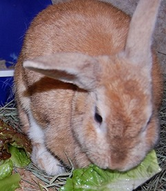
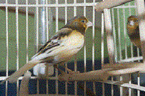

|  |
Rabbits's Type- Up and Coming Lop Eared . Age 4.(Confirmed by a vet.) If you want to adopt it contact me at: camila3@gmail.com or 069*******. This rabbit was found. |
|  |
Bird's Type -Canaries. Age 5 months.(Confirmed by a vet.) If you want to adopt it contact me at: redi@gmail.com or 069*******. |